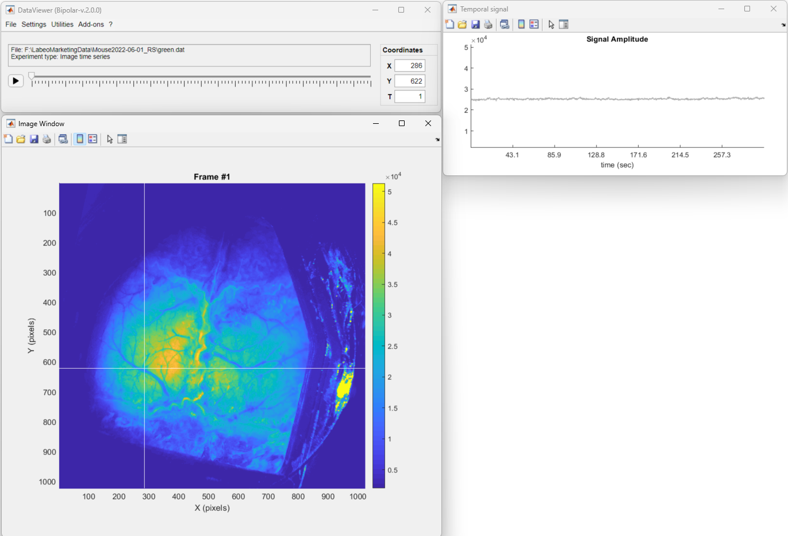
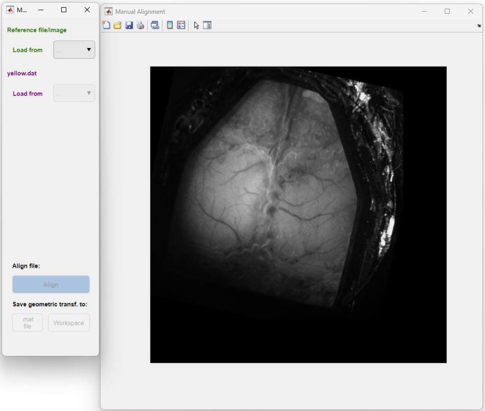
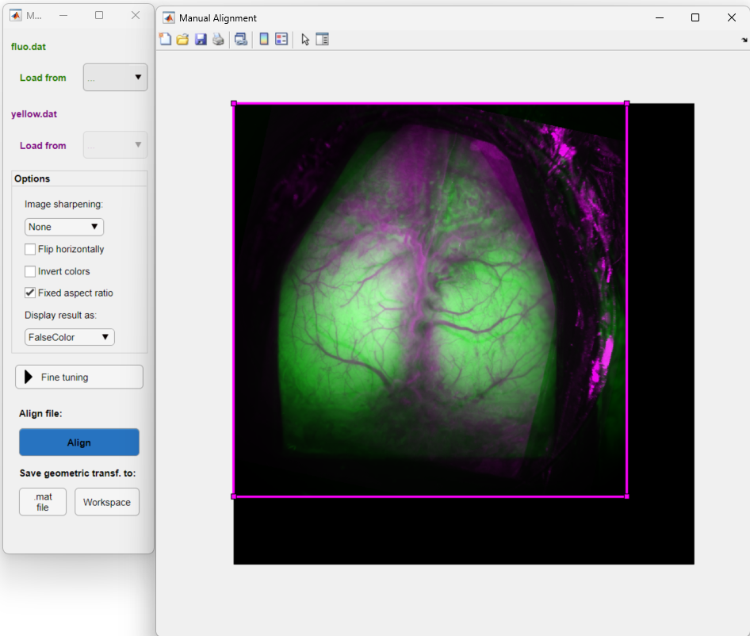

The manual image registration tool is available in the DataViewer app. The tool allows one to interactively align an image from a .dat file to a reference image. The geometric transformations are then applied to the misaligned .dat file.
Important
If you are using the umIToolbox app, click here to access the old manual aligment tool. This tool will be deprecated in a later version of the umIT toolbox.
Open it in DataViewer.

Then go to Utilities → Manual Coregistration to launch the tool. Note that a frame from the current data is set as the Misaligned file

Click on the green Load button to load the reference image from a .dat file

Once the reference and the misaligned images are loaded the options panel is visible and one can use the mouse cursor to align the frame (in magenta). See the Options section for a description of the available options to help with the coregistration.
Tip
Use the fine tuning panel to perform small and precise adjustments to the coregistration. In the panel, select the movement, the step resolution and click on the up/down arrows to move the image.
Once the moving image (magenta) is placed in the optimal position, click on the Align button to apply to the misaligned data.
Click on the Fine tuning button to show/hide the panel.
Here, one can set custom steps and move the misaligned frame incrementally by clicking on the up/down arrows. This is useful to perform small movements otherwise challenging with the mouse cursor.
Applies the coregistration to the misaligned .dat file.
A tform.mat file will also be saved in the .dat file's directory containing the geometric transformation affine2d object.
Saves the affine2d object with the geometric transformation to a .mat file.